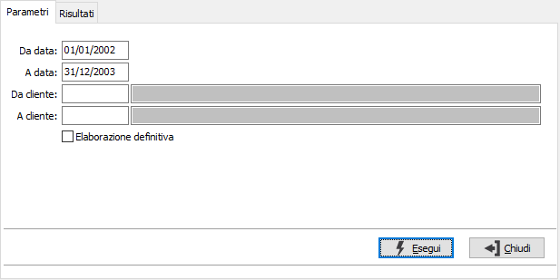
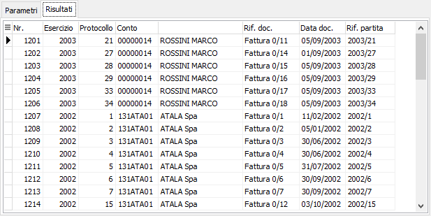

Eliminazione partite chiuse clienti
Il programma consente di eliminare le partite clienti chiuse.
La finestra si articola su due pagine, una per i parametri ed una per i risultati.

DA DATA: eventuale data documento da cui deve iniziare l'eliminazione. Confermando a vuoto, l'eliminazione inizia dalla prima partita valida.
A DATA: eventuale data documento con cui deve terminare l'eliminazione. Confermando a vuoto, l'eliminazione termina con l'ultima partita valida.
DA CLIENTE: indicare il codice del cliente da cui si intende iniziare l'eliminazione; confermando a vuoto l'eliminazione inizia dal primo codice valido. Sul campo sono attive le funzioni di ricerca (F9).
A CLIENTE: indicare il codice del cliente con cui si intende far terminare l'eliminazione; se si conferma a vuoto l'eliminazione termina con l'ultimo codice valido. Sul campo sono attive le funzioni di ricerca (F9).
ELABORAZIONE DEFINITIVA: se la casella contiene la spunta viene effettuata l'eliminazione delle partite, altrimenti vengono solamente visualizzate le partite oggetto dell'operazione.
La pressione sul pulsante Esegui inizia l'elaborazione e visualizza le partite oggetto dell'operazione.
